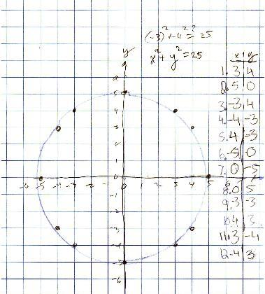

Donna , a 4th grader, makes some great graphs
Don asked Donna to graph x2 + y2 = 25; she found (0,5) and (5,0) that worked, then found she could use negatives as well. She realized quickly that the graph was a circle, with radius 5.

Don asked Donna to change the equation some way, then graph the new equation. She chose x2 + y3 = 25, which really didn't surprise Don, and was a great choice. Why? Because Don wasn't sure what the graph would look like! This took finding the cube root of a number on the calculator, which Donna was able to do. She realized that the graph was symmetrical over the y-axis.
They graphed Donna's equation x2 + y3 = 25 in Derive, below:

Don asked Donna to change the equation again some way, then graph this new equation. She chose x3 + y2 = 25 . It got more interesting!

The interesting thing Donna did, without knowing it, was to create the mathematical inverse of the graph of x2 + y3 = 25, in x3 + y2 = 25. In other words she interchanged the x and y, and these graphs are mirror images of each other in the line y=x! Rachael and Don graphed Donna's 3 graphs and y=x all on the sane graph below:

Great job Donna !!!